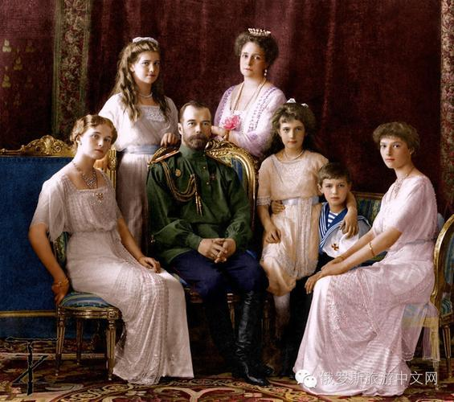

列夫·托洛茨基
原文原载于《火星报》60号，1904年2月25日
原文链接：https://www.marxists.org/russkij/trotsky/works/trotm008.html
（爱国主义罗斯的画面。城市的作用。反动力量的有利地位。维尔日伯洛沃[1]站这边或者站对面的自由主义口号。自由主义实际上在逃避职责。）
“俄罗斯团结一致……”走在最前面的是拿着诏书的沙皇，他的头衔长得拖到地上，连走路都绊脚，跟在他身后的则是毫无秩序又热情四溢的俄罗斯“人民”——整个出动，整群牲口……彼得堡的贵族和哈尔科夫的大学生，塔甘罗格的军事会议和罗斯托夫的工匠，新布赫塔的居民和布良斯克的中学生，神圣宗教会议和奇斯托波尔的旧礼仪派信徒——所有人都准备用自己的生命和财产来保卫俄罗斯。
从上到下，每个人都被一种爱国的兄弟情谊团结在一起。学生与军官们握手，将军亲吻学生们，按《莫斯科公报》的说法就是，“叛徒和败类已经四散而逃”，“保守派”、“自由派”和“反动派”齐声颂唱《上帝保佑沙皇》，基希讷乌的犹太村社同苏沃林、约瑟福维奇和克鲁舍万[2]比拼谁更拥有基督教的宽恕包容、谁对君主更加忠诚，建造铁甲舰的官营工厂管理层在爱国传单里把工人叫做“同志”，沙皇则把被他送去做炮灰的士兵尊称为“弟兄”……苏兹达尔那里爱国的呆子和报社的骗子就描绘了这么一幅画面。这幅画面里有很多艺术“缺陷”，其中最重要的一点是完全没用透视法。我希望为了画面里出现的一些元素把透视法还原出来。
但首先我们要注意一个很有教益的情况：画面当中主要的、甚至是唯一的底色就是城市。
我们“农民”和“农村”的那一部分俄罗斯，它的政治生活正处在一个关键时刻，但农民和农村却几乎完全被遗忘了。地方自治局的领导们发表一些爱国的献词，然后从“委托”给他们的农村居民身上榨取钱财“捐赠”，这种事几乎没引起任何注意，然而两三百名学生发出的爱国尖叫却在全俄罗斯，甚至可以说在全世界引起了反响。不管是对反动派还是革命派的斯塔罗杜姆[3]来说，城市和乡村谁相对来说在政治上更为重要这一点已经显著而生动地展现了出来。一个毫无疑问的事实是，反动派的组织手腕和革命之手是在同一片地方摸索，而沙皇大军里匆忙招募来的干部必然不是来自于未经开垦的“庄稼汉”阶层，而是来自于城市居民当中在政治上已经激动起来的群众。在即将到来的“审判日”当中，俄罗斯的命运将由城市来决定。
反动派早就进行了好多次更为隐秘的尝试，希望以此控制群众，并且在他们的组成部分——大学生、工人、城市资产阶级——当中建立起固定的基层组织，作为进一步行动的据点。这些活动为他们的爱国主义动员运动的技巧做好了预备……从这方面来说，比起莫斯科2月19日的君主制庆祝活动或者反犹屠杀的实践经验，爱国主义的游行并没增添什么新鲜的内容。
而最近事件里新出现的、而且尤其重要的一点是，反动派摆出了一副高尚的姿态。
好战的沙文主义是今日的反动派尚且可以为己所用的少数几种政治理念之一。爱国主义的幻想离日常生活的冲击最为遥远，和其他的反动幻想相比，它最后一个被自发的批评所侵蚀，在群众意识当中保存的时间也最长……在战争的要求下，爱国主义的口号被放上了议事日程，反动思想也开始兴风作浪了。
那些学生在学潮期间只知道蜷缩在墙边，现在却要“打倒那些高谈阔论妨碍办事的人”，那些杜马和地方自治局的议员有胆量把学校和医院搞得一团糟，现在大多支持搞内部投票选举，那些小市民、商人、学生和恐犹记者在去年的反犹狂欢之后受到了公众的唾弃和蔑视，现在发现自己又被抬到了宽广的街头，被推到了政治事件的最中心。他们给街头提出口号，他们带头唱国歌的第一句，威严地把剧院的乐队召到街上来，他们带头，他们是领袖，他们是主角……
那自由主义呢？

大事件把它撞翻在地了。它习惯了小打小闹，当反动的敌人在地方自治局里公然扮丑角（在特维尔）或者上街杀人放火（在基希讷乌）的时候，它只敢用合法但没什么作用的大话来对付它们。但是到现在，昨天还杀人放火的暴徒被事件的浪潮抬高到了有利的位置，成了民族爱国“热情”的代言人——自由主义就吹响了撤退的号角。
反动的力量体现在，它的口号——虽然相当笼统——此时对战争这个重大的民族事件做出了回应。而自由主义在自家的军械库里找不到一件同等强力、价值相当的武器。
它也不可能找得到。唯一能和反动口号对抗的口号就是：打倒战争和它的罪魁祸首——专制制度！但这个口号又是革命性的。
自由主义起初试图在审查制度的掩护下保持强制中立（审查制度在很多情况下正是自由主义坚不可摧的盔甲！）但是在左右两方的高压之下，自由主义并没有坚持这个立场。然后，它决定（当然，并没有私下串通）敞开胸怀接受反动一边提出的口号。“自由界”的人士明白——而且也很容易明白——爱国主义流氓们激起的运动是对自由主义最恶毒、最有力、最无可阻挡的迫害，但他们只犹豫了片刻就冲上前去，嘴里奔放地高喊道：“抓小偷！”然后……就淹没在主流当中了。他们在拯救自己的同时，也背叛了自由主义。
当然，与此同时，他们还自欺欺人，说他们是在用自己的武器同敌人作战。在他们看来，如果他们把反动派的口号“从外部”变成“社会的”、而且是“人民的”口号，他们就能清除这些口号当中的危害，剥夺它们原先的，也就是反动的意义，甚至有可能因为缺乏别的口号而把它们拉拢过来为自由主义服务。
不止有维尔日伯洛沃“站这边”的自由主义，还有斯图加特“站对立面”的自由主义[4]，它已经发酵成了新的事件。司徒卢威先生长期以来一直偏向左边，但他也被袭来的浪潮打落马下了。他又一次——就像上次同斯拉夫派耍花招那样——试着给出一个“正因为模棱两可而具有价值”的口号，不会在嘈杂的沙文主义大合唱里发出尖锐而不和谐的音符。
司徒卢威先生建议说，要发出致敬“自由”（是政治自由吗？）的呼声，同时应该这么喊：“军队万岁！”还有“俄罗斯万岁！”
哪支军队？是雅罗斯拉夫尔那支“法纳戈里亚小伙”[5]的军队吗，是在兹拉托乌斯特杀人[6]的军队吗，是践踏波兰的那支军队吗，是在高加索保证沙皇能侵吞强占的那支军队吗？还是说，他脑海里想的那支军队摆脱了军营里的愚蠢状况，把步枪交给革命的街头运动？但司徒卢威先生要是是这么想的，要是他真的相信，那么在喊“军队万岁”之前，就必须要有“革命万岁”这个口号。否则司徒卢威先生看起来就太像是个耶稣会士了，因为他在发假誓的时候一气呵成，心里完全不需要默念。
“俄罗斯万岁！”哪个俄罗斯？是那个踩着靴子踏在芬兰胸口上的俄罗斯吗，是那个用刺刀把波兰拉扯到自己这边的俄罗斯吗，是那个贪婪地把手伸向满洲和朝鲜的俄罗斯吗？是那个历史上就掠夺成性的俄罗斯吗？还是说这里说的是未来那个承认每个民族之自决权的俄罗斯？如果是这样，那就不应该投机利用这虚伪的爱国主义，因为它只知道一个东西，那就是用铁与血团结起来的俄罗斯。必须要有（如果没有，就去弄到手）政治上的正直和勇气，提出另外一个口号：“民族自决的自由万岁！”
但是，不——“在目前的困难时刻，其他更为尖锐、更有战斗性的口号并不合适（！），因此也不可取（！）。”（《解放》传单的第2页）
“在目前的时刻”，专制制度可是自己把自己的命运这个问题推上了街头——战斗性的口号竟然不合适！
斯图加特的自由派向军事沙文主义献媚（“军队万岁！”因为“军队就是武装起来的人民”），向国家爱国主义献媚（“俄罗斯万岁！”），它想借此把爱国主义的水流引向自由主义的磨坊，好让水磨动起来。可它没注意到，这磨坊里根本没有水磨……因为这是座风力磨坊！……而爱国主义的水流就这样飞驰而过，冲进了反动派的磨坊……
至于为什么——这就太清楚、太明显了。因为军队不是像非法的自由主义所想的那样，是“武装起来的人民”，而是人民当中被有意训练起来的部分，被武装起来对抗人民；因为在现在的国际军事力量竞赛当中，其中一个赌注并不是国家的荣誉——合法的自由主义是这么说的——而是国家之耻的荣誉，也就是专制制度的荣誉；因为战争损害的不是“国家利益”，而正是俄罗斯这些反对国家的机关的利益，也就是专制制度的利益——那么，哪怕把向俄罗斯和军队致敬的口号转移到了自由派机关报的版面上，它们也依然保持着它们反动的本质，为黑暗势力的动员服务，只专注于完成一个使命，那就是腐蚀全社会的政治良知。
官方的自由界（杜马、地方自治局、媒体……）欢欣鼓舞，对“我们”的胜利很有信心——因为“我们”强大而富有——但他们其实清楚地知道，我们弱小而贫穷。他们在撒谎，他们意识到自己在撒谎，他们也不会不明白，不论是上层还是下层都会按这些优点来评价他们。他们公开对日本发出爱国主义的诅咒，这是自由界又一次在撒谎，而且是厚颜无耻地撒谎，因为他们暗地里希望“我们”的军队战败，而且——我们之后就会看到——他们不能不这么希望，因为这正是他们目前一切政治盘算的基础所在。
真是深刻的教训！……自由主义之前一段时间试着靠形而上学和宗教高峰上的圣火振作起来，看起来就像是等着某个关键时刻，然后就从那高处跳下来，埋头钻进政治背叛的泥潭。那个时候《解放》教导说，“节制适度要求我们这么做。”现在我们就明白了节制适度的要求——那就是政治上的厚颜无耻。
自由主义虽然模仿着它右边邻居的反动嚎叫，但并没有让右边的邻居变得多么信任它、尊重它，而且它还没能力支持它左边邻居的革命口号，打落了左边邻居对它的最后一丝信心。自由主义简直是在整个关键时期自己把自己扔出了局。当然，它还会再次出现——要么是在新的暂时的反动时期，也就是说，万一我们所经历的这股政治热潮没找到宣泄的出口又厌倦了内部工作，因此又一次瓦解成了分散的政治摩擦；要么就是在最后做总结的时刻……而自由主义顶着一副忠君爱国的虚伪面孔，努力演着一出“亲善和解”的精神戏剧，为专制制度分忧解难，它做的这些事就是在使劲地加速这个庄严时刻的到来。
但就算从赤裸裸的“做总结”来看，自由主义也是在无情地偷窃自己的未来。
一年半以前，安东·斯塔里茨基（《解放》第7号）向地方自治局的自由派建议说，“不要急着去考虑自己的优先地位”。现在他可以投入加倍的精力，把这条建议再说一遍。正是“在目前这个艰难的时刻”，感觉很不好过的反而是敌人——当然，敌人说的是专制制度，而不是日本——明确而大胆的政治考量应该能迫使自由派付出更多力量，作为反对派去施加压力，提出“更加尖锐”和“更有战斗性”的口号，并且无论如何都不急于考虑自己是不是处在优先地位上……但是他们不会就这么等着——他们也没有等待的自由：他们会被自己阶级的重力不可抗拒地拽下坡去，而革命动荡的浪潮正从他们背后加紧赶上来。
他们会忍不住，而这就会证明，自由主义还没来得及成形就已经腐朽了。目光短浅、蠢笨愚钝，它的命运会和德国的自由主义一样，毕竟它身上也有后者的主要特征。
这些特征如下所述：
“德国资产阶级发展得如此迟钝、畏缩、缓慢，以致当它以威逼的气势同封建制度和专制制度对抗的那一刻，它发现无产阶级以及市民等级中所有那些在利益和思想上跟无产阶级相近的集团也以威逼的气势同它自己形成了对抗。……它既明确地反对国王又明确地反对人民，对国王和人民双方都采取敌对态度，而在单独面对自己的每一个对手时态度都犹豫不决，因为它总是在自己前面或后面看见这两个敌人；它一开始就蓄意背叛人民，而与旧社会戴皇冠的代表人物妥协，因为它本身已经从属于旧社会了……不相信自己，不相信人民，在上层面前嘟囔，在下层面前战栗，对两者都持利己主义态度，并且意识到自己的这种利己主义……不相信自己的口号，用空谈代替思想，害怕世界风暴，同时又利用这个风暴来谋私利……因缺乏任何独特性而显得平庸，同时又因本身平庸而显得独特，自己跟自己讲价钱；没有首创精神，不相信自己，不相信人民，没有负起世界历史的使命……没有眼睛，没有耳朵，没有牙齿，没有一切……”[7]这就是1848年前后的德国自由派资产阶级……而我国历史的“独特”精神并没发现任何对这些特征做增补的必要。应该根据这些特征，弄清楚现代俄罗斯自由主义的行为方式。他们眼里的前景是什么样子？政治生活当中，它每一天都在推动专制制度，让它沿着自己的道路越走越远，在群众中聚积起不满情绪，从而让矛盾更加尖锐，让“和平革新”的可能性变得愈发渺茫，并且以牺牲这种可能性为代价，增加了革命的历史机会——同时，还把重心从资产阶级反对派转移到了革命群众那边，其中为首的就是城市无产阶级。由此就有了自由主义的政治迷信，它急切地渴求着有某个第三者出来干预——不管它是意外事件还是机缘巧合……
然后战争就来了。资产阶级自由派像欢迎弥赛亚一样欢迎它。战争必须要承担起反对派没有力量完成的那个任务，它不可能拒绝的那个任务。怎么完成呢？有两条路可以走。
第一条路来自外部，也就是重演一遍塞瓦斯托波尔的事件，来一次巨大的溃败。军事“威力”的垮台会让政府的所有人员，乃至于政权本身名誉扫地。由此必然会导致一个结果——必须对政府进行革新，而革新的唯一办法就是向“社会”发出请求。
也不排除有可能走另一条更“有计划”的路。只有失去了胜利的一切可能性，也就是说，使国家的一切力量和手段都陷入了最为紧张的状态，专制制度才会彻底走向毁灭。然而，如果抛开国家的总体经济状况，把政府同社会结合起来的共同利益有多大就决定了这种紧张能达到的最高水平是多少。专制制度从后者那里夺走了一切可以夺走的东西，甚至还要再多拿，而在被英日帝国主义的铁拳打破自己罪恶的脑袋之前，它可以试着拓宽交往范围，让政府利益和“社会”利益有更多交集，也就是说，把政府事业的这个或那个部分交给各个统治阶级来控制，这样他们会觉得有利可图，而支持政府事业这个整体的成功。用自由派的公文术语来说，这就意味着“号召全国的地方自治力量参与政府工作”。不用多说，这种“号召”的意思当然不是要对业已破产的国家经济进行大力清算，而只是要引入一些调整。但或许还有一点也无需再解释，那就是这个阶级“一开始就蓄意背叛人民，而与旧社会戴皇冠的代表人物妥协”，不敢越雷池半步。它不仅没有试着把冒险盲动的君主政府同整个社会切割开来，反而做出一副毫无志气的悲情样子，嘴里说着“我们”的战争，“我们”的成功，“我们”爱好和平，还有“我们”的敌人背信弃义。资产阶级的本能悄悄提醒反对派，让它绝不要去打击那些名叫“民族名誉”、“民族光荣”、“民族事业”的偶像崇拜，它们和统治阶级的利益相关，为后者充当历史的保护神——不仅是农奴专制主义，哪怕是最自由的民主国家也会这么做。这些民族主义的幻想从学校教材的书页中、从教堂门前的台阶上、从演讲台前、从资产阶级的报刊里传进了人民的意识，这样一来，当财政机器以殖民政策的名义，用军国主义的嘴脸搜刮民脂的时候，统治阶级就还能够在人民当中保持住必要的精神平衡。今天，资产阶级自由派揣着虚伪的敬意停在民族主义神话的圣像面前，流露出一副犹豫的表情，不敢往这口它还要不止一次地取水解渴的井里吐痰。“俄罗斯万岁！”“军队万岁！”
是的，面对着爱国主义的狂欢，反对派不仅暴露了它对警察的恐惧，而且服从了阶级本能传给它的模糊声音。但阶级利益自觉的声音要求它立刻积极地参与社会力量的政治划分。这种矛盾不可调和——它根植于资产阶级的历史地位当中。资产阶级在政治上瓦解到哪种程度决定了解决矛盾的具体出路，而在现在的情况下，这个程度已经高到连自由主义都必须要逃避职责了……暂且是这样。它恐惧革命的力量，所以为后者让出了位置。
注释：
[1] 维尔日伯洛沃，1917年后称维尔巴利斯，是立陶宛的城市，毗邻与俄罗斯接壤的边境。本文写作时，该城隶属于苏瓦乌基省的弗拉季斯拉沃夫县。——中译者注
[2] 帕·亚·克鲁舍万（1860—1909）是比萨拉比亚的活动家和极端的反动分子。他从1882年开始进行文学活动，1897年起在基希讷乌出版报纸《比萨拉比亚人》，疯狂的反犹主义是它的特色。他是基希讷乌大屠杀的组织者。克鲁舍万这个名字象征着最黑暗、最肆无忌惮的反动。1903年末，他出版了一份短命的报纸《旗帜》。他在基希讷乌选区当选为第2届国家杜马议员。 约瑟福维奇是基辅版的克鲁舍万，俄罗斯人民联盟的地方主席。——《托洛茨基文集》编者注
[3] 斯塔罗杜姆是丹·伊·冯维辛的著名喜剧《纨绔少年》中的角色，是一个地位很高的开明贵族。——中译者注
[4] 司徒卢威任编辑的《解放》报刊每两周在斯图加特发行一刊。——中译者注
[5] “法纳戈里亚小伙”：1895年4月初，位于雅罗斯拉夫尔的科尔津金棉纺厂因为工资降低而举行了罢工。4月17日，警察逮捕了15名主要的“煽动者”。行政当局立刻召集了警察和驻守城市的法纳戈里亚团第6连和第7连。在工人和士兵的冲突中，长官命令向人群开枪，导致数名工人被杀和受伤。许多工人受到审判，被判处长期监禁。法纳戈里亚团的指挥官库拉金收到了尼古拉本人发来的感谢信，信中沙皇指出了“法纳戈里亚小伙们的坚定与沉着”。——《托洛茨基文集》编者注
[6] 这里指的是1903年5月6日，沙皇专制制度在兹拉托乌斯特进行的血腥屠杀（中译者注：见前文《地下报刊里的祖巴托夫分子》的注释）。——《托洛茨基文集》编者注
[7] 引文的出处是马克思的《资产阶级和反革命》。——中译者注